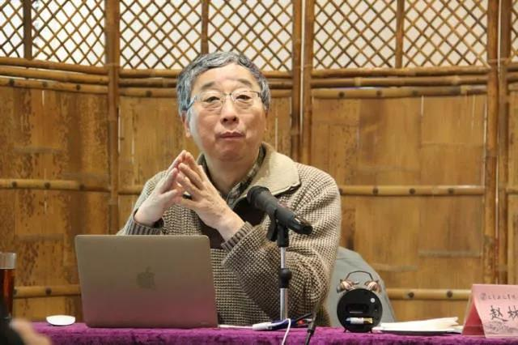
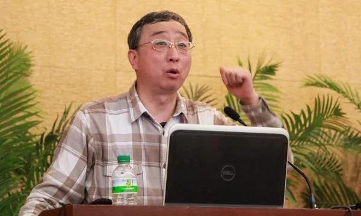

彼得德鲁克说：“一个企业只能在企业家的思维空间里成长,一个企业的成长被其经营者所能达到的思维空间所限制!”学习是打开思维空间即企业成长最快速的方式！

赵 林
●现任武汉大学哲学学院二级教授，国家教学名师，是武汉大学"四大名嘴"之一。
●享受国务院政府特殊津贴专家，澳门科技大学特聘教授，香港汉语基督教文化研究所学术委员。
●主要教学研究方向:西方哲学、西方文化、基督教思想史。已出版《黑格尔的宗教哲学》、《西方文化概论》、《西方哲学史》等学术著作、演讲集和高校教材18部，发表学术论文170余篇。
我们生活在一个哲学没落的时代
我们的时代是一个哲学没落的时代，在麦当劳、“好莱坞”等快餐文化席卷全球的浮躁氛围中，哲学像堂吉诃德显得滑稽可笑。感性化和短平快的求知方式，使得一切复杂的问题都变得简单化、单面化了，所有高深的哲理似乎都可以通过几个学术明星在电视上以一种调侃的方式来加以言说，在这种情况下，探讨事物抽象本质的哲学当然就成为一种“屠龙之术”了。
生活在一个哲学凋敝或者“戏说”哲学的时代，或许是一种不幸；但是从另一个角度来说，这也许是一种幸运，因为一个哲学没落的时代是一个轻松的时代，一个使人可以像动物一样跟着感觉走的时代。无论人们对于这个时代的价值判断是褒还是贬，但是有一点是大家都必须承认的，那就是我们的时代是一个市场化的时代，一个浮躁的时代，一个急功近利的时代。
在这个时代里，人们学习任何东西，首先都要问：“学它有什么用？”比如年轻人上大学，父母为他们选择专业，都会考虑学这个专业将来毕业以后有什么用。正因为如此，所以没有人愿意学哲学。
大家都明白，在我们这个时代，学哲学是没有任何用处的。如果在课堂上有学生问我：学哲学有什么用处？我往往会反问他：你说的这个“用处”到底是指什么？如果是指用途、功利意义上的用处，也就是说，学哲学能够给你带来什么实际的好处？那么我会直截了当地回答你，学哲学没有任何实际的用处！
假如有一位教哲学的老师对你们说，大家学好了哲学，将来就一定会经好商、当好官，会在实际工作方面高人一筹。我认为，这位老师如果不是在欺骗别人，就一定是在骗他自己。在我看来，学哲学与经好商、当好官并没有任何直接的因果联系，哲学没有这么大的能耐，可以让一个人在商场上财源亨通，在官场上飞黄腾达。
1.从哲学产生的原因看哲学的用处
赵林：哲学的用处与哲学产生的原因有着密切的关系，那么，哲学最初是怎样产生的呢？这个问题实际上在古希腊时就有人考虑了。古希腊哲学的集大成者亚里士多德就曾经分析过哲学产生的原因。
在《形而上学》这本书中，亚里士多德探讨了哲学产生的前提问题，说明了为什么我们会有哲学。在亚里士多德看来，别的学科都是与某种实际用途联系在一起的，比如说，我们研究物理学，是因为我们要了解自然界的规律；我们研究逻辑学，是因为我们要进行合乎理性的思考；我们研究语言学和修辞学，是因为我们要把语言变得更加有力和优美，这些当然都是非常实际的用处。
但是哲学产生的情况却不同，它完全超越了实际用途。亚里士多德认为，哲学的产生必须要有两个条件，一个是惊异，另一个则是闲暇。惊异，就是当我们面对大自然和人类社会时，往往会对世间的万千气象产生一种惊奇之感。惊异感是我们人类的一种非常好的素质，动物很少会有惊异感，动物只有恐惧、警觉之类的感受，它们不会在没有受到威胁的情况下，自觉地对外界事物产生一种惊异感。只有人才会在面对不解现象时产生惊异，才会在面对大自然和人类社会时提出各种问题。这种由于惊异而产生的问题意识构成了哲学思维的开端，正是由于惊异，才产生了最初的哲学思维。
但是亚里士多德又认为，光有惊异是不够的，人还必须有闲暇，才能使哲学产生。闲暇是什么意思呢？简单地说就是吃饱了饭没有事情干。众所周知，古希腊社会是一个奴隶制社会，有一批吃饱了饭没事做、衣食无忧的人，这种闲暇使得他们可以去思考那些虚无缥缈的问题。因此在亚里士多德看来，一个人如果没有闲暇，每天要为五斗米而忙碌，那么他肯定不可能去思考哲学问题。
在西方，在相当长的时间里，学习哲学通常都是有闲阶层的事情，他们不需要为生计而操劳，不需要为稻粱谋。在这种没有后顾之忧的情况下，他们就会去进行哲学思考。正因为如此，哲学在希腊是一门“爱智”之学，是一门纯粹思辨的学问，或者说是一门形而上的学问，具有不食人间烟火的超越特点。人们对于哲学通常都是抱着一种敬仰的态度，将其看作一门属于精神贵族的学问。在希腊社会，从奴隶中是不可能产生出哲学的，因为奴隶们顾不上思考哲学问题，他们要为生计而奔波。
如果按照亚里士多德的标准来看，今天，当我们要求哲学必须与谋生、求职、经商、升官等活动联系起来时，当我们以为学习哲学可以在这些实际方面有所用处时，我们已经不配谈论哲学了。亚里士多德一定会认为，我们对待哲学的这种实用主义态度恰恰表明我们已经把自己放在了一个奴隶的位置上，而奴隶是不可能进行真正的哲学思维的，他首先考虑的是现实的生计问题。
亚里士多德在探讨哲学产生的原因时，曾经明确地表示，别的学问都是为了要掌握一技之长，以用于生活中的某个实际目的，只有哲学是超越实用目的的。
所以，如果你问亚里士多德，学哲学有什么用处？他一定会告诉你，哲学是一门“没有用”的学问，因为它本身就是目的，学习哲学、掌握智慧，这本身就是人生的最高目的。
但是从另一种意义上来说，哲学又是无用之大用。当一个人真正进入到哲学思维的境界时，就会感受到一种彻骨的豁达和愉悦；当他面对哲学家们所谈论的智慧的时候，就产生一种赏心悦目、心旷神怡的感觉。
这就是哲学之大用了，它让人体验到一种精神的快乐。如果有人要进一步追问：这种精神上的快乐又有什么用？那么我只能反问他：听一曲贝多芬的音乐有什么用？它能让你填饱肚子吗？能给你带来荣华富贵吗？
如果人们所理解的用处仅仅只是指物质方面或者肉体方面的用处，那么我可以斩钉截铁地回答：学习哲学没有任何用处！但是，如果人们意识到自己是一个有灵魂、有精神追求的生灵，那么哲学所带来的智慧本身就足以使精神怡然自得了。在这种情况下，再追问哲学有什么用，岂不是贬低它了吗？所以，在西方，从很早的时候开始，哲学家们就已经表达了一种对待哲学的基本态度，那就是学以致知的态度——学习哲学的目的只是为了求知，而不是为了致用。
2.“学以致知”与“学以致用”
赵林：中国人民大学有一位已经谢世的著名哲学家苗力田先生，他一辈子研究西方哲学，晚年又参悟中国哲学和中国文化。在他80 多岁高龄的时候，在西南师范大学的一次学术会议上，曾经有过一个总结性的发言。
苗先生说：我毕生几十年学习西方哲学，后来又研究中国哲学，最后得出了一个比较性的结论，我可以用两句话来概括这两种哲学。中国哲学和中国文化的特点是“重现世、尚事功，学以致用”，而西方哲学和西方文化的特点则是“重超越、尚思辨，学以致知”。与中国哲学相比，西方哲学的显著特点就是专注于纯粹思辨，喜欢追问事物背后的本质，学习的目的就是为了获取知识，而不在乎功用。这就是苗先生一辈子研究中西哲学所得出的一个结论。
我非常同意、也非常推崇这个观点，我认为，苗力田先生对于中西哲学的真谛及其根本差异，可谓是一语道破。中国哲学也讲大道，也讲一种内在超越，但是实际上更多的却是注重人生关怀和现世伦常，所以我们在中国哲学中看的东西往往都与道德修养和经世致用联系在一起。一门学问如果无助于道德教化，无助于建功立业，那么这门学问就是没有用处的，也就是所谓的“屠龙之术”。这种观点，在当今这个急功近利的时代里，哲学对于一般人来说，当然就是一种学而无用的“屠龙之术”了。正因为如此，现在高考很少有人第一志愿会填报哲学专业。
在我所在的武汉大学哲学学院，大多数本科生都是由于没有办法，考分不够，不得已从别的专业调剂到哲学学院来的。在这些学生中，一部分人通过耳濡目染，逐渐地会对哲学发生兴趣；而另一些人一直到毕业时仍然对哲学毫无兴趣可言，好歹混个学位文凭也就罢了。这种现象其实也怪不得同学们，因为我们生活的时代就是一个讲究实利、讲究功用的时代，所以哲学这种“无用之学”就像一个怪物一样令人厌烦，没有几个人会真正对哲学感兴趣的。以至于我们这些教哲学的人在外面与别人聊天，别人问你是学什么的，我当然只能说自己是研究哲学的，但是总要加上一句：不是搞政治的，而是研究西方哲学的。为什么要做这样的说明呢？因为在一般人眼里，哲学总是与政治意识形态分不开的，一个哲学家往往就是一个满嘴大道理的政治说教者，就是一个夸夸其谈的无用之人。
所以从这种意义上来说，哲学就是一门“屠龙之术”，没有什么实际的用处。我们由于是在中国文化的精神氛围中长大的，这种文化传统本身就具有“学以致用”的巨大惯性，再加上我们这个时代的急功近利特点，所以哲学成为一门冷僻之学，这是完全可以理解的。
在我看来，最可怕的事情还不在于很少有人愿意学习哲学，而在于硬要让哲学这种“无用之学”派生出各种实际的用场来，这样就更加糟糕了。以现代中国人的价值观来处理哲学，可能会导致两种正好相反的倾向：一种倾向就是大家今天所看到的，由于哲学没有用，所以大家都不去学它；还有另一种倾向，现在的年轻人没有亲身体验过，那就是“文化大革命”时的情形，那时候全国上下掀起了一股学哲学的热潮，人人都争先恐后地学哲学、讲哲学，种田里面有哲学，炼钢里面也有哲学，什么事情都与哲学挂上了钩。哪怕是大字不识几个的文盲，也敢大言不惭地谈论哲学。今天回想起来，这种哲学的狂热恰恰是哲学的耻辱，如果把哲学变成一种“学了就要用”、“立竿见影”式的东西，认为学了哲学就可以多产粮食、多炼钢铁，这难道不是对哲学的一种亵渎吗这种态度从表面上看起来，好像是在热捧哲学，实际上却是在戕害哲学，把哲学变成了一种功利之学和势利之学，抽掉了哲学的高贵的精神特质，把它变成了一副包治百病的狗皮膏药。因此，哲学的狂热甚至比哲学的冷漠更多地表现了哲学的悲哀，如果一个社会中人人都大谈哲学，这一定是一个疯狂的社会。
哲学从本质上来说是一种阳春白雪式的学问，不可能让所有的人都对哲学感兴趣。哲学所关注的基本问题，始终都是超越于实用层面之上的，它永远也不可能“学了就要用”。所以，如果有一位教哲学的老师不断地对学生们说，学好了哲学就能在现实生活中左右逢源、心想事成，大家可千万不要当真，只当是一句玩笑话，笑一笑而已。

3.改变环境与改变自身
赵林：大家不要指望学习哲学有什么立竿见影的实际用处，哲学通常是没有什么实际用处的。但是我同时也要说明一点，所谓“用”有两种含义，一种是实用或者功利意义上的“用”，就是直接给你们带来物质利益方面的好处。
比如说，你学习法律、学习经济管理，它们能给你带来实际上的好处，使你成为一个律师、一个总裁，从而干大事、赚大钱。学习计算机、学习生物工程等专业，情况也是如此，它们可以给你带来实际的好处。那套知识你学会了以后，在日后的工作中再把它转卖给你的老板、你的上司，从而可以换得钱财、地位、名誉等等，你就可以利用这些东西来改善你的生活状况，从而改变你的生活环境。
因此，这种意义上的“用”，说到底就是改变环境之用。人是生活在一定的环境之中的，环境对于我们来说非常重要，一切实用性的学问或知识，如法学、经济学、计算机等等，它们的主要用处就是改善我们的物质条件，改变我们的生活环境。但是，当你通过改善自己的生活环境而最终获得一种精神上的满足感时，你是否意识到这种满足感或幸福感是绕了一大圈才实现的？你首先要把学到的知识转变成金钱和地位，然后再用它们来改善你的生活状况，最后才能从自己的享受和别人的羡慕中感受到满足和幸福。
我想提醒大家不要忘记了，我们除了要面对环境之外，同样也必须面对自身。我们的满足感和幸福感，既可以通过改变环境来实现，也可以通过改变自身来实现。
从某种意义上来说，改变自身可能比改变环境更加重要。因为一个人永远只能活在自己的感觉和思想之中，只能活在自身之中，环境必须通过自身才能感受到。世界就是你眼中的世界，你有什么样的眼光，你就能看到什么样的世界。因此，改变你的眼光，你实际上就改变了世界。在有些同学看来，这个观点或许有唯心主义之嫌，但是它确实揭示了一个真理。
我始终强调，学哲学的最大用处就在于改变一个人的精神状态和心理素质。如果你的精神状态和心理素质改变了、提高了，那么你对世界的看法肯定就和别人不一样，你就会看到更广阔的领域、更深刻的奥秘。这就是“用”的第二种意义，即精神上或心理上的用处。这种用处可以使你在精神上保持一种高屋建瓴的姿态，使你不用绕圈子就能够直接体验到精神上的愉悦和心理上的满足。事实上，当我们赚了钱去买好吃的食物、好看的衣服等等，然后再用这些东西来满足自己的欲望，最终在心理上产生一种满足感和幸福感，这与我们去欣赏一场美妙动听的音乐会、阅读一段优美感人的散文诗和进行一次启迪智慧的哲学思辨，从而直接从中体验到心理上的满足和精神上的愉悦，二者不过是殊途同归罢了。
由此哲学的用处恰恰就在于使我们在精神上和心理上直接感受到一种心旷神怡的满足与幸福。当别人由于环境的限制而苦恼时，你却会因为自身素质的提高而在精神上感到豁达和愉悦。虽然你并没有改变环境本身，但是你却把自身改变了，从而也就改变了你眼中的环境和世界。世界是什么？一个真实、客观的世界无非就是你眼中所看到的世界，你思想中所思考的世界。
离开了你的感觉、你的思维，世界本身的所谓客观性又有什么意义呢？我们固然不能像18 世纪英国哲学家贝克莱那样宣称：“存在就是被感知。”但是我们至少可以说，存在的意义是离不开我们的感受的。世界的存在是客观的，但是它的意义却是主观的，因人而异的。世界的存在只有在你的感受中、在你的思维中，才是有意义的。
一块石头，对我们一般人来说，有什么意义呀？但是对于一个地质学家来说，就有意义了。这不是因为石头本身有什么变化，而是因为人不一样了，主体不一样了。不同的人，在面对同一个东西的时候，往往会有不同的感受，而这种不同的主观感受可能比那个所谓的客观存在本身对我们生活的影响更大。因为我们是活在自己的感受之中，而不是活在纯粹客观的世界之中。这是一个很简单的道理，正因为它太简单了，乃至于我们大家都看不到。就像我们永远也看不到自己的眼睫毛一样（或者说视而不见、熟视无睹），因为它离我们的眼睛太近了。我们的眼睛往往看不到离自己最近的东西，同样，一些最深奥的道理之所以往往不为人们所注意，只是因为它们看起来太简单、太朴素了。
由此可见，哲学的用处就在于帮助一个人调理、改善、提高自己的眼光，它是一门改变人自身、而不是改变人的客观环境的学问。在这种意义上，哲学可谓是无用之大用。
如果一个人有了这样一种深厚的哲学教养，他就不会去随波逐流，不会在乎别人怎么看自己，他就会像但丁所说的那样：“走自己的路，让人们说去！”这时，他就能体会到心灵的自由，以及与这种自由相伴随的满足感与幸福感。只有当一个人达到了这种精神境界，他才明白了哲学到底有什么用。总而言之，哲学使人学会了换位思维，学会了像柏拉图所说的那样不断地在认识过程中“转向”或者“回头”，从而逐渐摆脱偏执而走向超脱，摆脱流俗而走向明智。正因为达到了一种超然豁达的精神境界，所以西方哲学史上的许多哲学家都是长寿的，一种心旷神怡的精神境界往往能够起到延年益寿的作用，这或许也是哲学的另一个意外用途吧！
概括而言，哲学与其他实用性学科的最大不同之处在于，其他学科的知识都被用来改变环境，哲学的智慧却被用来改善自身。这种改善自身的功能是通过哲学所培育的怀疑精神而实现的，这是一种“有教养的怀疑”，即对所怀疑的对象有着深刻认识的怀疑，它使人对于一切自称为绝对真理的理论观点都保持着一种清醒的批判。正是这种怀疑精神与批判意识，才是哲学的灵魂所在，才是哲学永远不折的精神脊梁！而那种一味阿谀溢美、趋炎附势的哲学，充其量不过是一种丧失了怀疑精神和批判意识、从而丧失了阳刚之气和“爱智”之魂的伪哲学而已。
我平时喜欢讲悲剧，哲学就是一场崇高的悲剧。在我们的生活中到处都有悲剧，悲剧的存在是一个客观事实。一个人要想一辈子不经历悲剧，那是不可能的，除非这个人根本就没有生活过。只要你生活了，你就会遇到悲剧，一种没有经历过悲剧的人生才是真正悲惨的人生。问题的关键不在于有没有悲剧，而在于如何对待悲剧。一个人如果仅仅把悲剧当作是一件悲惨的事情，他本身也就成为一个很可悲的人了。但是他如果有一种哲学的素养，有一种超脱的精神和深邃的睿智，从而把悲剧看作是人生历程中的一些必然性插曲，那么这些插曲就会具有几分崇高的色彩，就会带给他一些深刻的启示。这样，他就会对人生的悲剧采取一种一笑置之的态度。这种态度，从贬义上来说，可以叫做“阿Q精神”；从褒义上来说，就是一种极高的哲学素养，也就是所谓的“大智若愚”。
这样一种在怀疑精神和批判意识的土壤中生长起来的哲学素养，正是我要通过讲授西方哲学史课程来为同学们培育的。
温馨提示：
想了解更多西方哲学，那就跟随名师品读西方哲学史吧！感受名师风采，欢迎来到力合商学院，2018年7月21-22日，武汉大学四大名嘴之一赵林教授为您带来【西方文化：《古希腊文化》《古罗马文化》】精品课程，欢迎来电预约试听！
报名咨询：
请在右侧留言或致电400-115-1005（12小时*7天）报名
获取本周课程表请电话咨询400-115-1005（12小时*7天）
联系方式：400-115-1005 邮箱:fub@tsinghua-sz.org
地址：深圳市南山区高新科技园南区高新南七道19号深圳清华大学研究院五楼


版权所有：深圳清华大学研究院 备案：粤ICP备11063336号-3 深圳网站建设：沙漠风